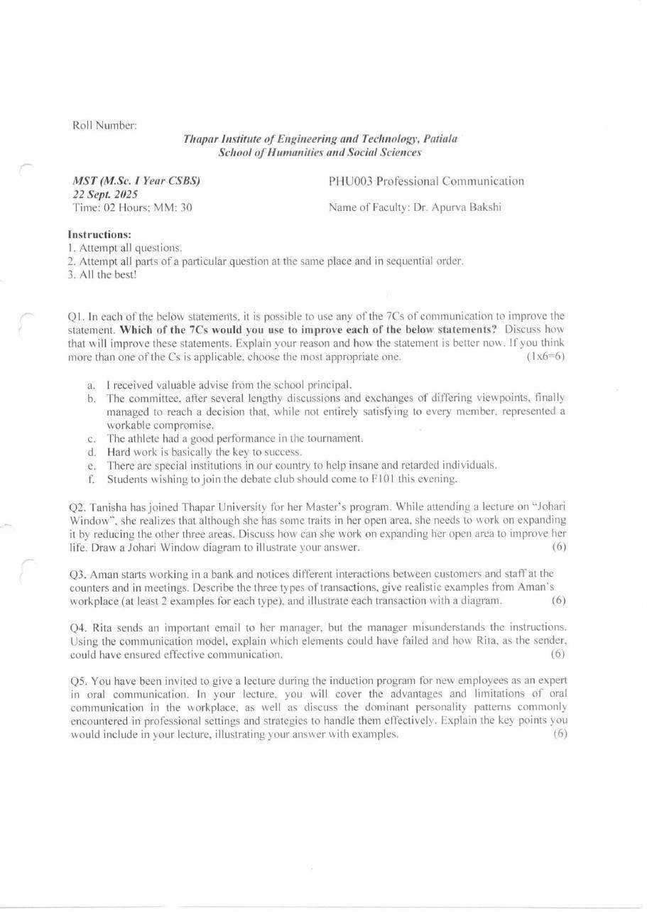
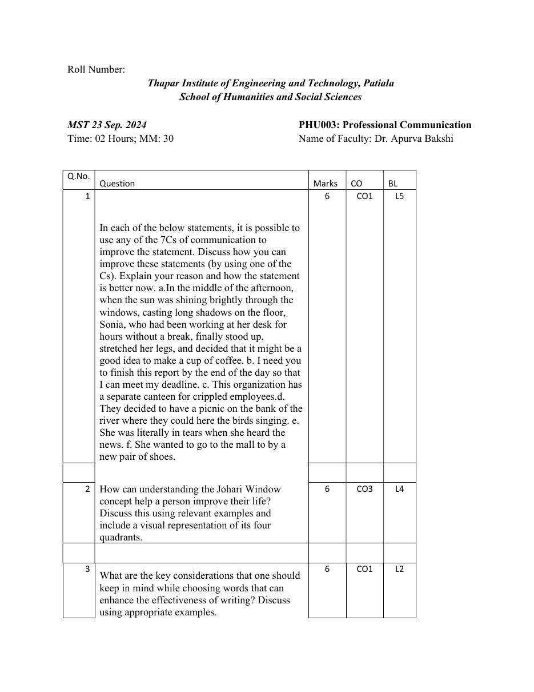
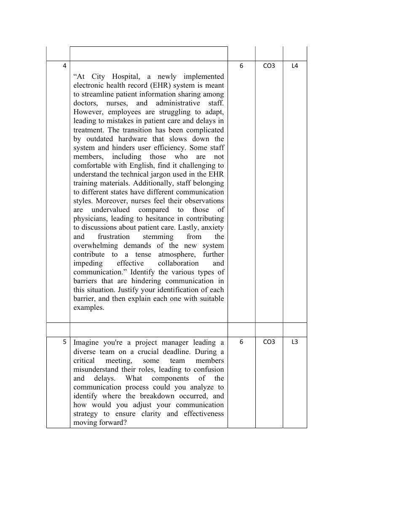

PHU003 — Professional Communication MST Question Paper Analysis
Built from two actual MST papers — September 2024 and September 2025. Every topic below traces back to a question printed on those papers.
Before you rely on this: only two papers are available, so these patterns are hints rather than a reliable trend. If your current semester's syllabus has added or dropped a topic, prepare accordingly — always cross-check against this year's official syllabus first.
Three of the five questions in 2025 repeated a 2024 topic — the 7Cs, the Johari Window, and the communication process. That's 18 of 30 marks.
1
Must-do topics — highest chance of coming
Every topic from the two papers, ranked by whether it came up both times. "Chance" here comes only from how often each topic appeared in past MSTs — it is not a guarantee about this year's paper.
Very high asked in every paperPossible asked in one of the two papers
7Cs of communication
Very high
Asked in 2 of 2 papers2 questions12 marks in totalLast asked: Sep 2025
Sep 2024Sep 2025
Prepare: Six faulty sentences each time: name the C that fixes each one, rewrite the sentence, and explain why it's better.
Always Question 1, always 6 marks.
Johari Window
Very high
Asked in 2 of 2 papers2 questions12 marks in totalLast asked: Sep 2025
Sep 2024Sep 2025
Prepare: The four quadrants with a labelled diagram, and how feedback and self-disclosure expand the open area — with examples.
Always Question 2, always 6 marks.
Communication process / model
Very high
Asked in 2 of 2 papers2 questions12 marks in totalLast asked: Sep 2025
Sep 2024Sep 2025
Prepare: Sender, encoding, message, channel, receiver, decoding, feedback and noise — and how to find where a message broke down in a scenario.
Barriers to communication
Possible
Asked in 1 of 2 papers1 questions6 marks in totalLast asked: Sep 2024
Sep 2024Sep 2025
Prepare: Physical, semantic, cultural, organisational and psychological barriers, each tied to a line of a case study.
Transactional analysis
Possible
Asked in 1 of 2 papers1 questions6 marks in totalLast asked: Sep 2025
Sep 2024Sep 2025
Prepare: Parent, Adult and Child ego states, and complementary, crossed and ulterior transactions — with diagrams and two examples each.
Oral communication & personality types
Possible
Asked in 1 of 2 papers1 questions6 marks in totalLast asked: Sep 2025
Sep 2024Sep 2025
Prepare: Advantages and limitations of oral communication at work, and handling the common personality patterns in a workplace.
Word choice in writing
Possible
Asked in 1 of 2 papers1 questions6 marks in totalLast asked: Sep 2024
Sep 2024Sep 2025
Prepare: Simple, concrete, bias-free and correctly used words, with examples.
2
Year-wise paper analysis
Question by question, and each paper on its own. Newest first. Both are out of 30.
Q
Sep 2024
Sep 2025
1
7Cs — improve six sentences
7Cs — improve six sentences
2
Johari Window — improving your life
Johari Window — expanding the open area
3
Choosing words for effective writing
Three types of transactions (TA)
4
Barriers — hospital case study
Communication model — misunderstood email
5
Communication process — team meeting breakdown
Oral communication & personality patterns
September 2025 — most recent
Sep 22, 202530 marks5 × 6 marks2 hours
Topic split (marks)
7Cs of communication 6Johari Window 6Transactional analysis 6Communication process 6Oral communication 6
What stood out
Three of its five questions repeated a 2024 topic: 7Cs, Johari Window, and the communication process.
The 7Cs question added an explicit instruction: if more than one C fits, choose the most appropriate one.
New topics: transactional analysis with diagrams, and oral communication with personality patterns.
Questions 2 to 5 were all set in scenarios — Tanisha, Aman, Rita, and a new-employee induction.
September 2024
Sep 23, 202430 marks5 × 6 marks2 hours
Topic split (marks)
7Cs of communication 6Johari Window 6Word choice 6Barriers 6Communication process 6
What stood out
The longest question was a hospital case study on barriers to communication.
A theory question on choosing words for effective writing.
The paper printed its own charts: L2 6, L3 6, L4 12, L5 6 marks — most marks were for analysis, not recall.
What stays the same across the two papers
Same shape: five questions, 6 marks each, and Questions 1 and 2 were the same topics both times.
Scenario-based: most questions give a situation and ask you to apply a concept to it, with examples.
Diagrams are asked for — the Johari Window both times, and transactions in 2025.
Only two papers exist here, so treat these patterns as hints, not guarantees.
3
Repeated-topics heatmap
Every topic across both papers at a glance. Each paper is out of 30.
Topic
Sep 2024 /30
Sep 2025 /30
Asked in
7Cs of communication
6
6
2/2
Johari Window
6
6
2/2
Communication process / model
6
6
2/2
Barriers to communication
6
—
1/2
Word choice in writing
6
—
1/2
Transactional analysis
—
6
1/2
Oral communication & personality
—
6
1/2
Darker = bigger share of that paper's marks · number = marks
· not asked
4
Topic deep-dive — every question, by year
Every topic, with the actual question asked in each paper.
7Cs of communication
2 / 2 papers
SEP 2025
Name the most appropriate C to improve each sentence and explain how it's better: (a) I received valuable advise from the school principal. (b) A long sentence about a committee reaching a workable compromise. (c) The athlete had a good performance in the tournament. (d) Hard work is basically the key to success. (e) There are special institutions in our country to help insane and retarded individuals. (f) Students wishing to join the debate club should come to F101 this evening.
SEP 2024
Improve each sentence using one of the 7Cs and explain: (a) A very long sentence about Sonia making coffee. (b) I need you to finish this report by the end of the day so that I can meet my deadline. (c) This organization has a separate canteen for crippled employees. (d) …where they could here the birds singing. (e) She was literally in tears when she heard the news. (f) She wanted to go to the mall to by a new pair of shoes.
Johari Window
2 / 2 papers
SEP 2025
Tanisha wants to expand her open area by reducing the other three. How can she do it? Draw the Johari Window.
SEP 2024
How can understanding the Johari Window help a person improve their life? Use examples and a visual of the four quadrants.
Communication process / model
2 / 2 papers
SEP 2025
Rita emails her manager, who misunderstands the instructions. Using the communication model, which elements could have failed, and how could Rita have ensured effective communication?
SEP 2024
As a project manager, team members misunderstand their roles in a meeting. Which components of the communication process would you analyse, and how would you adjust your strategy?
Barriers to communication
1 / 2 papers
SEP 2024
City Hospital's new EHR system: outdated hardware, technical jargon, staff from different states, nurses feeling undervalued, and anxiety. Identify each type of barrier, justify it, and explain with examples.
Word choice in writing
1 / 2 papers
SEP 2024
What should you keep in mind while choosing words to make writing more effective? Discuss with examples.
Transactional analysis
1 / 2 papers
SEP 2025
In Aman's bank, describe the three types of transactions with at least two realistic examples each, and a diagram for each.
Oral communication & personality types
1 / 2 papers
SEP 2025
As an expert at a new-employee induction, cover the advantages and limitations of oral communication at work, and the dominant personality patterns at work with strategies to handle them.
5
Concept cheat sheet
The frameworks these papers actually asked about, in the form you'll need to write them.
2024 (c) "crippled"; 2025 (e) "insane and retarded"
Offensive, non-inclusive words
Courtesy
2024 (b) — "so that I can meet my deadline"
Writer-focused, not reader-focused
Consideration
2025 (c) — "a good performance"
Vague; no specifics
Concreteness
2025 (f) — "this evening"
Missing the exact time
Completeness
Johari Window
Open · Blind · Hidden · Unknown
Open: known to you and to others. Blind: known to others, not to you. Hidden: known to you, not to others. Unknown: known to no one. Created by Joseph Luft and Harrington Ingham (1955).
Expand the open area
Ask for feedback → shrinks the blind area. Self-disclosure → shrinks the hidden area. Shared discovery and new experiences → shrink the unknown area.
Communication process
Sender → Encoding → Message → Channel → Receiver → Decoding → Feedback, with Noise at every step
To find a breakdown, check each element in turn: an unclear message, the wrong channel, decoding differently from what was meant, no feedback, or noise.
Barriers to communication
Physical · Semantic · Cultural · Organisational · Psychological
Mapped to the 2024 hospital case: outdated hardware → physical/technological; technical jargon and English → semantic (language); staff from different states → cultural; nurses undervalued by physicians → organisational (status); anxiety and frustration → psychological (emotional).
Transactional analysis (Eric Berne)
Ego states: Parent · Adult · Child
Draw each person as three stacked circles labelled P, A and C, with arrows between them.
Complementary · Crossed · Ulterior
Complementary: the reply comes from the ego state that was addressed — the arrows run parallel and talk flows. Crossed: the reply comes from a different ego state — the arrows cross and communication breaks down. Ulterior: a hidden psychological message sits under the social one.
Oral communication
Advantages vs. limitations
Advantages: instant feedback, speed, a personal touch, tone and body language, flexibility. Limitations: no permanent record, easy to misremember or misinterpret, not suited to long or complex detail, and depends on the speaker's skill.
Personality patterns at work
One common framework is passive, aggressive, passive-aggressive and assertive styles — respond assertively and stay calm and specific. Use the framework taught in your class if it differs.
Prefer familiar and specific words, cut fillers and clichés, avoid offensive labels, and watch homophones like here/hear and advice/advise.
6
Common mistakes that lose marks
Specific traps in these two papers — each one costs easy marks.
✕
Naming the C without rewriting the sentenceBoth papers asked how the statement is better now — show the rewritten sentence, not just the name of the C. Sep 2024, Sep 2025
✕
Calling spelling errors a Clarity problemhere/hear, by/buy and advise/advice are Correctness problems. Sep 2024, Sep 2025
✕
Mixing up advice and adviseAdvice is the noun ("valuable advice"); advise is the verb. Sep 2025
✕
Missing the offensive word"Crippled," "insane" and "retarded" need bias-free replacements such as "employees with disabilities" — that's Courtesy. Sep 2024, Sep 2025
✕
Listing several Cs for one sentenceBoth papers wanted one C per sentence, and 2025 said to choose the most appropriate one if several fit. Sep 2024, Sep 2025
✕
Johari Window without the diagramBoth papers explicitly asked for it. Label the axes: known / unknown to self, and known / unknown to others. Sep 2024, Sep 2025
✕
Swapping blind and hiddenBlind: others know it, you don't. Hidden: you know it, others don't. Sep 2024, Sep 2025
✕
Expanding the open area one way onlyIt takes both feedback (shrinks blind) and self-disclosure (shrinks hidden). Sep 2025
✕
Listing barriers without tying them to the caseEach barrier needs its line from the case as proof — hardware, jargon, states, status, anxiety. Sep 2024
✕
Leaving out feedback and noiseBreakdown questions usually hinge on decoding, missing feedback, or noise — cover every element of the model. Sep 2024, Sep 2025
✕
Transactions without diagrams or enough examplesThe question asked for at least two examples and a P-A-C diagram for each of the three types. Sep 2025
✕
Answering only half the questionThe oral communication question had three parts — advantages, limitations, and personality patterns with strategies. Sep 2025
7
If you only have one evening
7Cs — learn the list, then practise all twelve sentences from these two papers, rewriting each one.
Johari Window — draw it from memory with labels, and explain feedback vs. self-disclosure with examples.
Communication process — the full model, and how to trace a breakdown in a scenario.
Barriers — the five types, each with a one-line example.
Transactional analysis — P-A-C diagrams for complementary, crossed and ulterior transactions.
If time is left: oral communication pros and cons, personality types, and word choice.
8
Full question papers
Both papers as original scans. Newest first. Try one as a timed 2-hour mock before looking at the analysis.
MST — September 22, 2025
PHU003 Professional Communication · 30 marks · 2 hours

MST — September 23, 2024
PHU003 Professional Communication · 30 marks · 2 hours


Was this guide helpful?
Your answer only goes to the student who made this guide — it helps decide what to fix and what to build next.